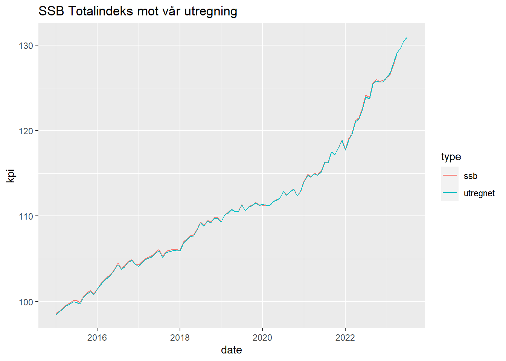

Sok-1016 Prosjektoppgave
Fakultet for biovitenskap, fiskeri og økonomi.
Skrevet av en gruppe på 2 personer med kandidatnummer 3 og 11
Skrevet av en gruppe på 2 personer med kandidatnummer 3 og 11
Oppgave 1: Økte renter og Silicon Valley Bank, 10%
Den 10. mars kollapset den amerikanske banken Silicon Valley Bank (SVB). En av årsakene til kollapsen var trolig at økningen i amerikanske styringsrenten gjorde at verdien av statsobligasjonene i bankens balanseregnskap falt.
Oppgave 1a, 5% Forklar hva en obligasjon er, og hvilken rolle den fyller i finansmarkeder. Hvorfor faller den i verdi når rentene stiger?
En obligasjon er et finansielt instrument som binder utstederen(kreditor) til å betale et bestemt beløp til innehaveren(debitor) på gitte tidspunkt. Obligasjoner kan omsettes på børsen, hvor markedsprisen (kursen) bestemmes av tilbud og etterspørsel.
Løpetiden på obligasjoner varierer, noe som innebærer hvor lenge det tar før det nominelle beløpet tilbakebetales. Kortsiktige obligasjoner med løpetid på ett år eller mindre omtales som sertifikater.
Obligasjoner utstedes av forskjellige aktører, som nasjonale myndigheter, kommuner, bedrifter og internasjonale organisasjoner. Målet med å utstede obligasjoner kan være å skaffe finansiering til prosjekter, investeringer, driftsutgifter, eller for å restrukturere eksisterende gjeld.
Når rentene øker så blir det mer attraktivt å kjøpe nye obligasjoner med høyere rente slik at gamle obligasjoner går ned i verdi. Det blir også mer attraktivt å ha penger i bankinnskudd. Det er også noe som heter “Diskonteringsfaktor” der renten brukes til å diskontere fremtidige penger til nåverdi. Når renten øker så økter diskonteringsfaktoren som reduserer nåverdien av obligasjonens fremtidige utbetalinger. Dette fører til at verdien på obligasjonen synker. V=obligasjonskurs som i dette tilfellet er 100. i=rente \(V=\frac{100}{1+i}\)
Oppgave 1b, 5% Hvorfor hadde innskytere et incentiv til å trekke ut innskuddene fra SVB da styringsrenten økte?
Depositorene i Silicon Valley Bank (SVB) hadde flere insentiver til å trekke ut innskuddene sine da styringsrenten økte.
En bank blir mer sårbar for en bankrun når den har flere usikrede innskudd, som ofte er tilfellet for banker som SVB, som har mange innskudd fra venturekapital og teknologifirmaer. Når en bank har mange usikrede innskudd, kan en oppgang i renten, som det som skjedde med SVB, føre til at innskuddene blir trukket ut raskt. Dette kan igjen føre til at banken blir insolvent, noe som kan utløse enda flere uttak.1
Når rentene stiger, faller verdien av obligasjoner, inkludert de i bankens balanse. Dette er fordi obligasjoner har en fast rente, og når markedsrentene stiger, blir disse fastrenteobligasjonene mindre attraktive, og prisen på dem faller. SVB hadde investert stort i langsiktige obligasjoner, spesielt de som var sikret av boliglån. Da Federal Reserve hevet styringsrenten fra 0-0,25% til 4,75-5% mellom mars 2022 og mars 2023, ble verdien av disse obligasjonene betydelig redusert.2
Den 8. mars 2023 rapporterte SVB om et tap på 1,8 milliarder dollar på salget av 21 milliarder dollar av disse verdipapirene og annonserte en plan om å øke kapitalen. Mange usikrede innskytere tolket disse handlingene som tegn på økonomiske problemer i banken, noe som førte til at rykter begynte å sirkulere på sosiale medier. Den neste dagen trakk kundene mer enn 40 milliarder dollar fra banken, noe som utløste en bankrun. SVB klarte ikke å selge eller låne nok mot sine eiendeler for å møte kravene til innskudd. Dette førte til at California Department of Financial Protection and Innovation tok kontroll over banken den 10. mars.3
Dette viser hvordan en kombinasjon av økte styringsrenter, store ubeskyttede innskudd og bekymringer rundt bankens økonomiske helse kan føre til at innskytere har et incentiv til å trekke ut innskuddene sine.
Oppgave 2: Drivkrefter for kronen, 40%
Den norske valutakursen
\[\hspace{0.1cm}IS \hspace{0.1cm} Y = \frac{1}{1-c_1(i-t)-b_1+a_1}(z^c-c_1z^T-c_2(i-\pi _e)+z^i-b_2(i-\pi_e)+G+z^{nx}+a_2(E^e+K(i^F-i)))\] \[\hspace{0.1cm} RR \hspace{0.1cm} i=\frac{1}{1+d_1(1-\theta)\frac{\kappa}{E_{-1}}}(z^i+d_1(\theta \pi_e+(1-\theta)(\pi^F+z^\pi)-\pi^*) +d_1(1-\theta)\frac{E^e+\kappa i^F-E_{-1}}{E_{-1}}+(d_2+d_1\theta\beta)\frac{Y-Y^n}{Y^n}\] \[\hspace{0.1cm} PK \hspace{0.1cm} \pi = \pi_e + \beta\frac{Y-Y_n}{Y_n}+z^\pi\] \[\hspace{0.1cm} KPI \hspace{0.1cm} \pi^e = \theta \cdot \pi + (q-\theta)(\frac{\Delta E}{E}+\pi^F)\]
Nå begynner IS-RR-PK likningene å bli ganske kompliserte, vi blir ikke å se så veldig nøye på selve likningene, men vi vil ta for oss hva som skjer med modellen og hvordan endringer i parametere vil føre til skift i en åpen økonomi.
I Pengepolitisk rapport 1/23 ser vi først og fremst på kronekursindeksen I-44. Den måler kronens verdi mot et veiet gjennomsnitt av valutaene til de 44 landene vi importerer mest fra. Høyere indeksnivå for I-44 betyr lavere kronekurs.
I figur 1 så vises I-44 kronekursindeksen korrelert mot 12-månedersrentedifferanse, som er styrings-renten i Norge sin differanse mot styrings-renten til våre handelspartnere. Det vi kan se her er at når vi har en lavere styrings-rente enn våre handelspartnere så svekkes kronen.
I et rasjonelt valutamarked vil investorer se etter muligheter for å tjene mest mulig penger på hvilken valuta de investerer i, om handelspartnere til Norge har høyere rente på sin valuta (lavere verdi på 12-måneders swaprentedifferansen) vil dette føre til redusert etterspørsel etter kroner. Matematisk er dette parameteren \(a2\) i IS-kurven, og hvis \(a2 > 0\) får vi en udekket renteparitet. Parameteren a2 skrives som \(E = {E^e} +\kappa(i^F-i), \kappa > 0\) hvor hvis E øker svekkes kronen, og motsatt vil styrke kronen. Parameteren \(\kappa\) er den viktige parameteren for forklaring av figur 1 her, hvor den fanger opp hvor mye valutakursen svekkes dersom renteforskjellen øker med en enhet. Den høye renten skyldes igjen hovedsakelig høy inflasjon i utlandet som gir oss i Norge importert inflasjon, dette vil vises i en økning i den eksogene parameteren \(\Delta\pi^F > 0\), som vil gi et skift i RR-kurven.
IS-RR-PK-modellen i en åpen økonomi
Her ser vi I-44 kronekursindeksen korrelert med det amerikanske aksjemarkedet S&P500 (The Standard and Poor’s 500) som er en indeks for aksjekursen til de 500 største bedriftene i USA. Sammenhengene vi kan se her er at den norske kronekursen har samvariert med S&P500 siden 2020 (denne sammenhengen ser man bedre i Figur 2.C i Pengepolitisk rapport siden de har reversert den høyre aksen, noe som er en limitasjon ggplot2 ikke har mulighet til å gjøre med to forskjellige akser.

Vi ser her at kronen svekker seg normalt når det er uro i finansmarkeder målt mot S&P500, siden 2022 har indeksen gradvis gått nedover på grunn av eksempelvis invasjonen i Ukraina og kronekursindeksen samsvarende.
Hvis vi ser på modellen kan dette sees som en eksogen endring \(\Delta z^i < 0\), som betyr en reduksjon i investeringer. Dette vil si at IS-kurven skifter til venstre og vi får en ny likevekt som vist i figur 3. Vi får en reduksjon i BNP og inflasjon og normalt ville sentralbanken da måtte senke renten, men som ikke skjer på grunn av det tidligere inflasjonssjokket.
Korrelasjon mellom den norske kronen og oljepris
Når dollarprisen på olje er høy får vi mer dollar og indirekte via oljefondet vil Norge tjene på at oljeprisen er høy. Derfor har det vært høy avkastning på norsk økonomi og penger investert i norske kroner, noe som har gjort at den norske kronen har korrelert mye med oljeprisen kontrakt brent blend som man kan se i figur 4. Dette har endret seg etter 2022, og Norges Bank prøver å forklare dette med en endring i risikopremien \(z^{RP} > 0\) for investeringer i Norge akkurat nå men at denne risikoen vil fases ut og realvalutakursen går tilbake til sitt likevekstnivå som man kan se i Figur 2.B i pengepolitisk rapport.
At den norske kronen har sluttet å korrelere med oljeprisen kan også forklare et kostnadsjokk i den norske økonomien, \(\Delta z^\pi > 0\), som gjør at IS-kurven går til venstre og RR-kurven går oppover(dette skjer også på grunn av importert inflasjon). PK går også oppover som gjør økonomien krevende å stimulere sammen med de tidligere sjokkene.
Avslutningsvis vil jeg si at årsakssammenhengene Norges bank har funnet i sine figurer tilstrekkelig kan gi forklaringer på hvordan den norske kronen depressieres mot utenlandsk valuta, og tenker også at risikopremien kan være en stor årsak til svakere krone-utvikling enn hva likevektsrealkursen skulle tilsi.
Oppgave 3: Utviklingen i norsk økonomi, 50%
Vi utregner KPI fra varer på Gruppenivå fra SSB. visning av forskjell fra vår KPI totalindeks og de offisielle SSB Totalindeks tallene finner du under referanselisten samt kode til dette. Det er noen avvik men de er veldig små.
Kode brukt til utregning av bidrag til KPI er i stor grad hentet fra Even Hvinden sitt løsningsforslag på SOK-1004 case 3.4
I Pengepolitisk rapport fra Norges bank så er det flere makroøkonomiske størrelser som kan påvirke styringsrenten. Kronekursen, vekstutsikter for norsk økonomi, inflasjon, og økonomisk vekst hos handelspartnere.
Inflasjonen og den økonomiske veksten hos våre viktigste handelspartnere kan påvirke vår økonomi og dermed rentesetting. Dette kan vi se i IS PK og KPI ligningene når de nå er utvidet for en åpen økonomi. \[IS \hspace{0.10cm} Y = \frac{1}{1-c_1(i-t)-b_1+a_1}(z^c-c_1z^T-c_2(i-\pi _e)+z^i-b_2(i-\pi_e)+G+z^{nx}+a_2(E^e+K(i^F-i)))\] I IS ligningen så er NX er netto eksport og \(a_2\) leddet i forteller oss om effekten andre lands økonomi har på vår økonomi. \(E\) forteller oss om valutakurs og dermed hvordan effekt dette har på vår økonomi dersom for eksempel vår valuta blir svakere og dermed resulterer i en økning av kroner i vår økonomi fra ekport da vi får flere kroner per vare solgt i annen valuta.
\[RR \hspace{0.10cm} i=\frac{1}{1+d_1(1-\theta)\frac{\kappa}{E_{-1}}}(z^i+d_1(\theta \pi^e+(1-\theta)(\pi^F+z^\pi)-\pi^*) +d_1(1-\theta)\frac{E^e+\kappa i^F-E_{-1}}{E_{-1}}+(d_2+d_1\theta\beta)\frac{Y-Y^n}{Y^n}\]RR ligningen er en pengepolitisk reaksjonsregel som beskriver hvordan sentralbanken setter rentenivået basert på forventet inflasjon og nå utenlandsk inflasjon i den utvidede modellen. \[(4) \hspace{0.1cm} KPI \hspace{0.25cm} \pi^e = \theta \cdot \pi + (q-\theta)(\frac{\Delta E}{E}+\pi^F)\] KPI ligningen beskriver dannelsen av inflasjonsforventninger der endringsraten i valutakursen beskriver som \(\frac{\Delta E}{E}\) og utenlandsk inflasjon \(\pi^F\)
Siden KPI har økt og vi har et veldig stramt arbeidsmarked som vises i videre figurer så vil dette bety at PK er høy slik at RR må skifte opp, som da leder til at IS skifte kurven skifte til venstre som da vil lede til at PK vil få et nytt treffpunkt ved høyere arbeidsledighet og lavere inflasjon igjen.
Siden vi har sett på drivkrefter for kronen i oppgave 2 så fokuserer vi på makroøkonomiske data for Norge.
Vi starter med å se på Styringsrenten fra Norges Bank
Det vi kan se er at styringsrenten har økt det siste året og som vi ser i IS RR PK så skifter RR altså styringsrenten opp dersom IS og PK øker.
Siden KPI ligningen forteller oss om hvordan inflasjonsforventningene dannes så tar vi med KPI vekst inn i figuren for å se om dette stemmer.
I denne figuren så kan vi se at styringsrenten følger KPI veksten ganske godt. Norges Bank har et inflasjonsmål på rundt 2% men KPI har vært langt over det målet.
I Pengepolitiske rapport så har Norges bank et anslag på hvordan KPI blir å endre seg videre. De har data frem til og med februar 2023 og lager da anslag for mars og utover.
Her ser vi at Norges Bank har bommet i mars og april på sine anslag på KPI-endring og de har forventet en større nedgang. Dette forteller oss da at ved å bare se på KPI så vil Norges Bank finne det nødvendig å øke styringsrenten ytterligere.
Prisen har steget mye på mange varer og Norges Bank forventer at lavere energipriser vil dempe konsumprisindeksen. Elektrisitet og brensel osv går under “Bolig, lys og brensel”
Frem til 2021 så var elektrisitetspriser en veldig stor grunn til økning i KPI men ved strømstøtte så fikk regjeringen dette dempet. Fremover så har strømpriser vist seg til å bidra mindre en før.
Det vi da kan se er at energipriser har holdt seg noe stabile men det har vært bidratt mindre i april.
Norges Bank har hatt veldig mye rett her men vi ser da at de har vært noe optimistiske i hvor mye nedgang det kom. Videre fremover så kan vi da forvente flere renteøkninger for å senke inflasjonsforventningene.
Anslaget på arbeidsledighet traff og siden vi ser at arbeidsledighet har økt noe så kan vi forvente at inflasjon vil gå noe ned i henhold til PK ligningen.
Referanser

Utregning til figur over er i kode her.
df_ssbkpi <- df_ssbkpi %>%
separate(måned,into=c(“year”, “month”),sep=“M”) %>%
mutate(dato = ymd(paste(year, month, “1”))) %>%
rename(gruppe = konsumgruppe) %>%
rename(var = statistikkvariabel) %>%
rename(verdi = value) %>%
select(dato,gruppe,verdi)%>%
arrange(gruppe,dato) %>%
rename(date = dato)
#Mye av kode her ble hentet fra Even Hvinden løsningsforslag til case 3 i sok-1004.
var_navn <- df_kpi$var %>%
unique()
df_kpi_vekter <- df_kpi %>%
filter(var %in% last(var_navn)) %>%
mutate(verdi = verdi/1000) %>%
mutate(verdi = replace(verdi,is.na(verdi),0)) %>%
select(date,gruppe,verdi)%>%
arrange(gruppe,date)
df_indeks <- df_kpi %>%
filter(var %in% first(var_navn)) %>%
select(date,gruppe,verdi) %>%
mutate(verdi = replace(verdi,is.na(verdi),0))%>%
arrange(gruppe,date)
df_total <- df_indeks %>%
select(date,gruppe) %>%
mutate(verdi = df_indeks$verdi*df_kpi_vekter$verdi) %>%
group_by(date) %>%
summarize(verdi = sum(verdi)) %>%
mutate(gruppe = “KPI”)
df_bidrag <- df_indeks %>%
mutate(verdi = (100*(verdi - lag(verdi,12))*lag(df_kpi_vekter$verdi,12)/lag(df_total$verdi,12)))
gruppe_navn <- df_indeks$gruppe %>%
unique()
df_total <- df_indeks %>%
select(date,gruppe) %>%
mutate(verdi = df_indeks$verdi*df_kpi_vekter$verdi) %>%
group_by(date) %>%
summarize(verdi = sum(verdi)) %>%
mutate(gruppe = “KPI”)
rebaser <- 100/df_total$verdi[df_total$date == as.Date(“2015-06-01”)] #Kode hentet fra Even Hvinden github
df_total <- df_total %>%
mutate(verdi = verdi*rebaser)
df_dtotal <- df_total %>%
mutate(verdi = 100*(verdi - lag(verdi,12))/lag(verdi,12)) %>%
filter(date >= as.Date(“2020-01-01”))
df_plot <- df_bidrag %>%
filter(date >= as.Date(“2020-01-01”)) %>%
rbind(df_dtotal)
#sjekker utregning ut mot Totalindeksen til SSB
df_utregning <- df_total %>%
filter(date >= as.Date(“2015-01-01”))
df_utregning <- df_utregning %>%
left_join(df_ssbkpi, by = “date”) %>%
rename(utregnet = verdi.x,
ssb = verdi.y) %>%
select(date, utregnet, ssb) %>%
pivot_longer(-date, names_to = “type”, values_to = “kpi”)